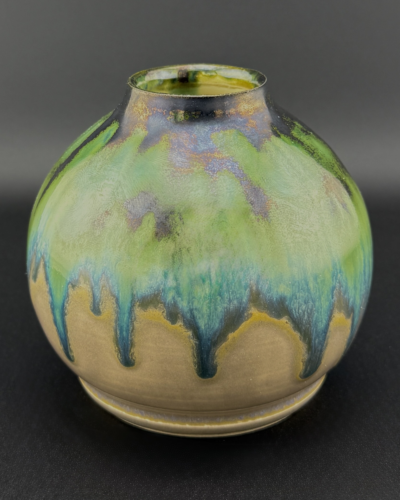

Behind the Scenes: Crafting a Ceramic Mug
Posted on February 20, 2025
A peek into the process of throwing clay and glazing our signature mugs.
Stay tuned for updates, behind-the-scenes, and crafting tips!
Posted on February 20, 2025
A peek into the process of throwing clay and glazing our signature mugs.
Posted on February 15, 2025
Introducing our latest lavender-oatmeal blend—perfect for sensitive skin.
Posted on February 22, 2025
Exploring the art of cutting and soldering glass for vibrant panels.